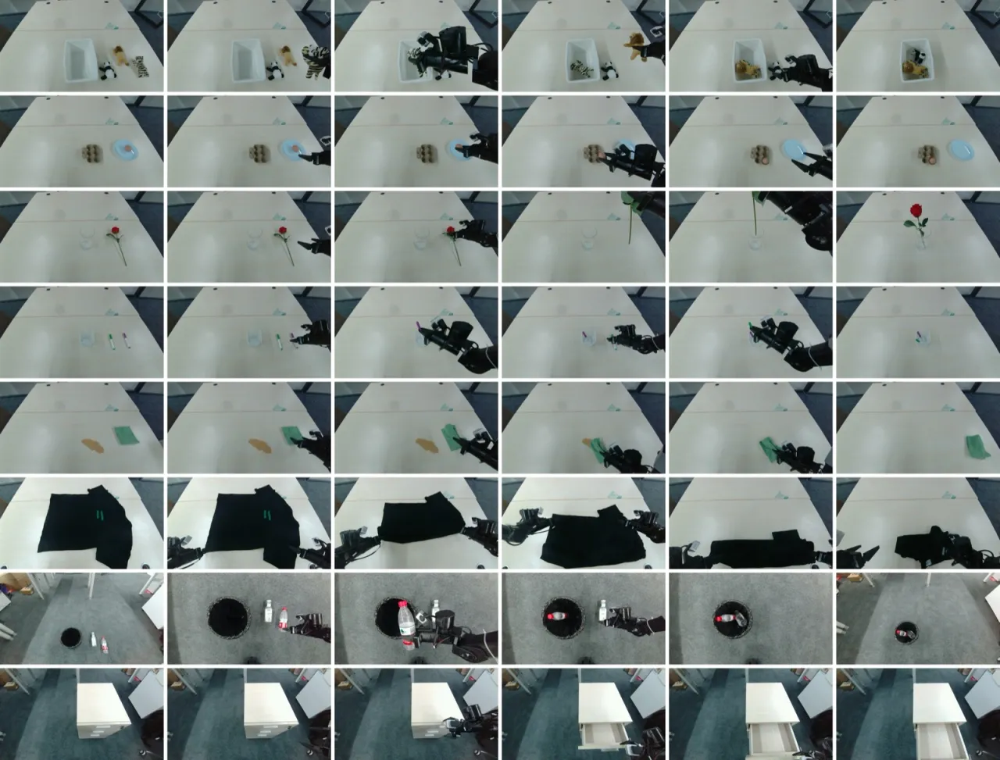
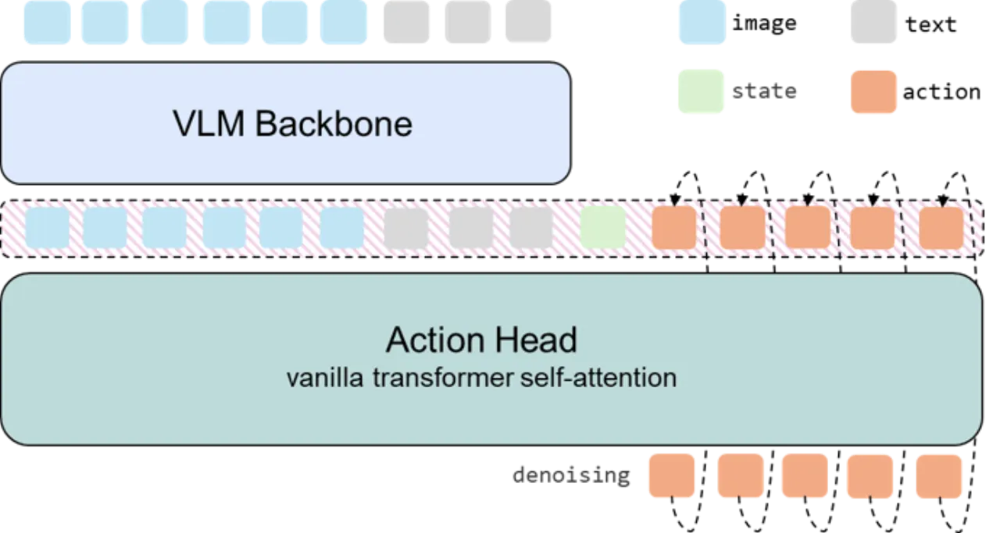
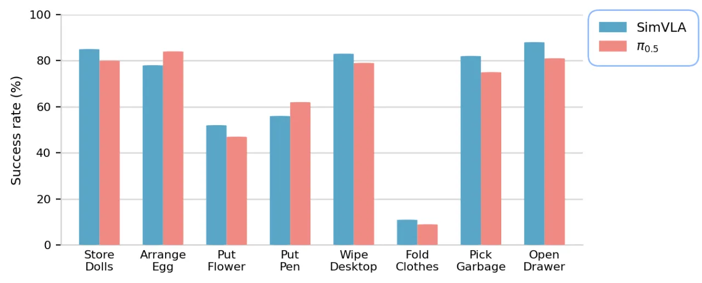

VLA（Vision-Language-Action）模型正快速演进，但复杂的架构创新往往伴随不一致的训练细节，令人难以判断性能提升的真正来源。SimVLA 通过严格解耦感知与控制、标准化关键训练动态，以仅 0.5B 参数的极简设计，在标准仿真基准上超越数十亿参数的模型，并在真实机械臂任务中达到与 π₀.₅ 相当的水平。
VLA 领域快速发展，新方法不断引入空间先验、多视角感知、复杂 action representation 等创新，但这些进展往往伴随着不同的训练 recipe 和实现细节。这使得研究者难以区分"是架构创新带来了提升，还是训练技巧的差异"。
"These advancements are often accompanied by varying training recipes and implementation details, which can make it challenging to disentangle the precise source of empirical gains."
SimVLA 的核心主张是：一个经过精心规范化的极简设计，足以达到当前最优水平。它为未来的架构创新提供了一个透明、可复现的参考基线，使研究者能够将性能归因于具体的架构改进，而非隐藏的训练技巧。

SimVLA 是一个模块化的极简 VLA 框架：将预训练 VLM 作为感知编码器，以轻量 Transformer action head 执行 conditional flow matching，生成连续的 action chunk。整体流程遵循"encode-once, denoise-in-the-head"原则，每个控制步骤 VLM backbone 仅运行一次。

SimVLA 使用预训练的 vision-language backbone（默认为 InternVL2-2B，约 0.5B 有效参数）处理多视角 RGB 图像与语言任务指令，输出融合的视觉-语言 token 表示。感知模块与控制模块严格解耦，VLM 学习率乘子默认设为 0.1，以保护预训练权重。
控制头是一个轻量 vanilla Transformer encoder，接收 VLM 输出的 token 与噪声 action，通过 conditional flow matching 学习将噪声映射为连续 action chunk（动作序列长度 H 测试范围：{10, 20, 30}）。推理时在 action head 内高效去噪，无需逐步调用 VLM。
SimVLA 的核心贡献之一是识别并规范化了若干训练中的隐性变量（"silent" training dynamics），这些因素对性能的影响甚至超过了架构选择：
实验在三类基准上评估：仿真基准 LIBERO（含 Spatial / Object / Goal / Long 四个子任务集）与 LIBERO-PRO（鲁棒性评估）、SimplerEnv（WidowX 与 Google Robot）、以及 Galaxea R1 Lite 真实机械臂上的八项多阶段任务。
| 模型 | 参数量 | Spatial | Object | Goal | Long | 平均 |
|---|---|---|---|---|---|---|
| OpenVLA-OFT | 7B | 97.6% | 98.4% | 97.9% | 94.5% | 97.1% |
| π₀.₅ | 3B | 98.8% | 98.2% | 98.0% | 92.4% | 96.9% |
| VLA-Adapter | 0.5B | 97.8% | 99.2% | 97.2% | 95.0% | 97.3% |
| SimVLA | 0.5B | 99.6% | 99.8% | 98.6% | 96.4% | 98.6% |
| 平台 | 模型 | 平均成功率 |
|---|---|---|
| WidowX | MemoryVLA | 71.9% |
| WidowX | FPC-VLA | 64.6% |
| WidowX | SimVLA | 95.8% |
| Google Robot | SpatialVLA | 67.5% |
| Google Robot | RT-2-X | 65.6% |
| Google Robot | ThinkAct | 65.1% |
| Google Robot | X-VLA | 75.7% |
| Google Robot | SimVLA | 76.1% |
| 模型 | 参数量 | LIBERO 平均 | VRAM (GB) |
|---|---|---|---|
| OpenVLA-OFT | 7B | 97.1% | 62.0 |
| π₀.₅ | 3B | 96.9% | 51.3 |
| VLA-Adapter | 0.5B | 97.3% | 24.7 |
| SimVLA | 0.5B | 98.6% | 9.3 |

八项评估任务包括：整理玩偶（store dolls）、排列鸡蛋（arrange eggs）、插花（put flowers in vase）、放笔（put pen in holder）、擦桌面（wipe desktop）、折叠衣物（fold clothes）、捡垃圾（pick up garbage）、开抽屉（open drawer）。大多数任务在零样本跨场景设置下取得约 80% 的成功率。
消融分析将每项因素独立移除后在 LIBERO 上评估，揭示了哪些是决定性因素、哪些影响有限：
| 消融项 | LIBERO 平均成功率 | 变化 |
|---|---|---|
| 完整 SimVLA（基准） | 98.6% | — |
| 禁用 data shuffling | 9.9% | −88.7% |
| 禁用 action normalization | 12.3% | −86.3% |
| 学习率 5×10⁻⁴ | 72.7% | −25.9% |
| VLM LR 乘子 = 1.0 | 44.2% | −54.4% |
| Cross-attention（替换 token concat） | 91.5% | −7.1% |
| Conditional AdaLN injection | 91.1% | −7.5% |
| Florence-2 backbone | 97.7% | −0.9% |
| 缩小 Action Transformer 规模 | 98.0% | −0.6% |
消融结果显示：data shuffling 和 action normalization 是最关键的因素，禁用任意一项都会导致性能崩溃至接近 10%。相比之下，架构细节（如 action transformer 规模、backbone 选型）的影响相对次要，充分支持了"训练动态比架构创新更重要"的核心论点。
在 LIBERO-PRO 的位置扰动评估中，SimVLA 在 Object、Goal、Long 子任务集上的位置鲁棒性较差，论文指出这是"a key direction for future work"，需要额外研究。语义鲁棒性（98–100%）表现优异，但空间布局扰动场景仍然是挑战。
在 Galaxea R1 Lite 的零样本跨场景评估中，折叠衣物（fold clothes）、放笔（put pen in holder）、插花（put flowers in vase）等任务成功率相对较低，说明在无微调的情况下，细粒度操作与长时序任务仍有提升空间。
SimVLA 的强性能高度依赖于规范化的训练细节（data shuffling、action normalization）和学习率配置，这些超参数可能需要针对不同数据集和任务重新调优。论文中的实验基于固定数据源，对于数据规模极小或分布迥异的场景，其鲁棒性尚未验证。
所有真实机器人实验均在 Galaxea R1 Lite 上进行，尚未在不同机器人形态（如双臂、移动底座等）上系统验证跨形态迁移能力。